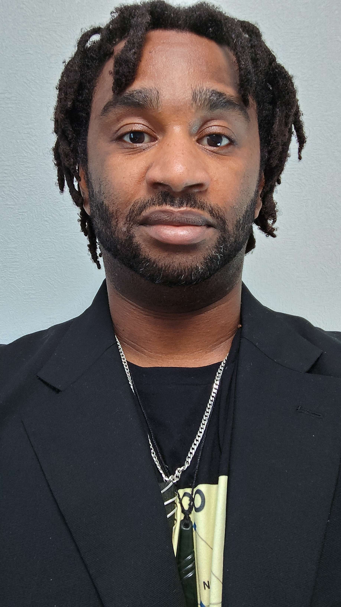
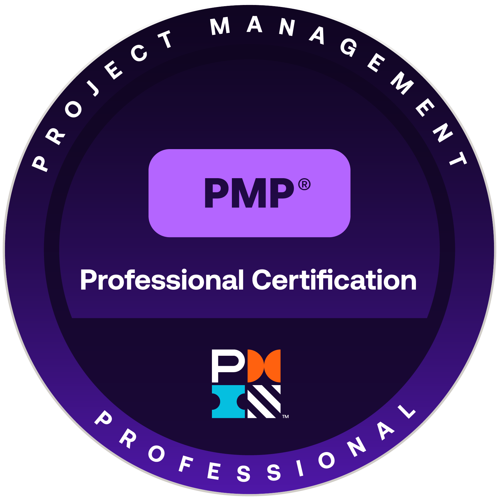
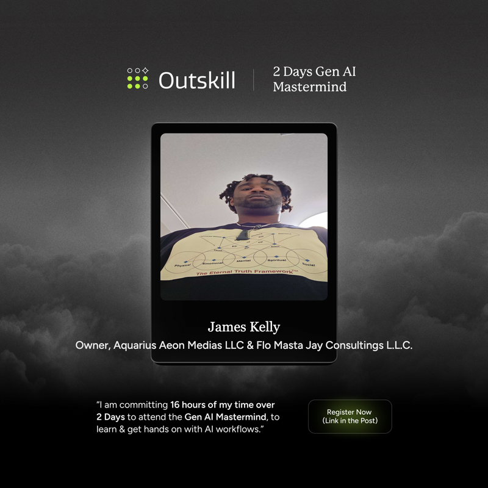
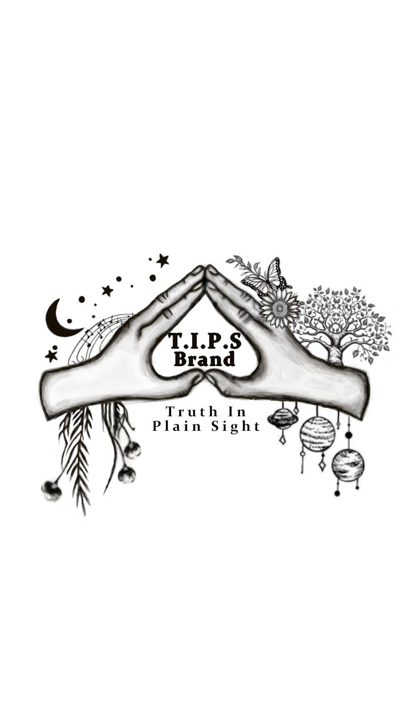
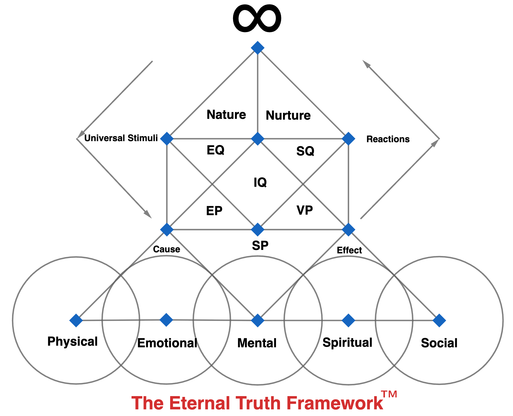
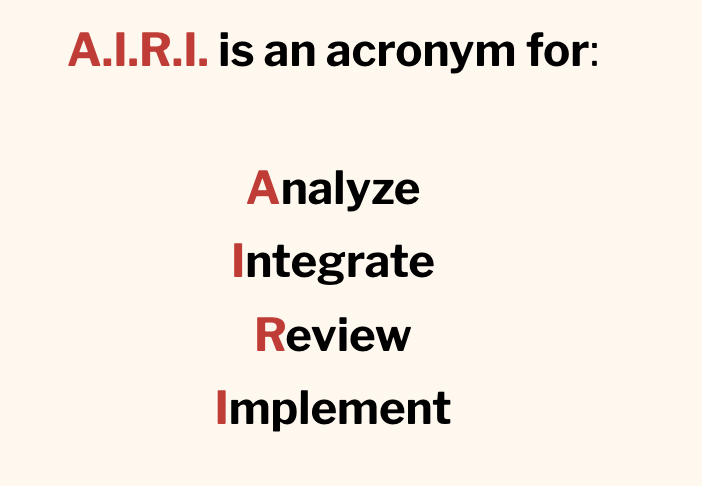

Flow Integration Specialist · Kitami, Hokkaido, Japan フロー統合スペシャリスト · 北海道北見市
Project Manager · Entrepreneur · Artist · Philosopher プロジェクトマネージャー · 起業家 · アーティスト · 哲学者
"When one can flow freely between all facets of one's self - that is when one exists as their Truest Self." 「自分のすべての側面を自由に流れることができるとき、人は最も真の自己として存在する。」
I am a PMI-certified Project Management Professional and Flow Integration Specialist operating at the intersection of enterprise project leadership, philosophical entrepreneurship, and cross-cultural artistry.
Based in Kitami, Hokkaido, Japan as a bilingual American expat with N2-equivalent Japanese proficiency, I have spent 10+ years building systems, teams, and frameworks that don't just deliver results - they transform the humans involved.
My work is guided by the Aquarius Aeon Manifesto - a personal ethical charter grounded in Truthful Knowledge, Compassionate Unity, and Everlasting Peace. Everything I build carries this signature.

PMP® - Credly Verified
Outskill AI Cert私はPMI認定のプロジェクトマネジメントプロフェッショナル (PMP®)であり、企業プロジェクトリーダーシップ、哲学的起業家精神、異文化芸術の交差点で活動するフロー統合スペシャリストです。
北海道北見市在住のバイリンガルなアメリカ人駐在員として、N2相当の日本語能力を持ち、10年以上にわたってシステム、チーム、フレームワークを構築してきました。
私の活動はアクエリアスエオン・マニフェストに導かれています - 真実の知識、慈愛の統一、永続的な平和に根ざした個人的な倫理憲章です。
A privacy-first lifestyle design app for LGBTQIA+ individuals - unifying identity mapping (GSL Venn Diagram, 500+ terms), the Eternal Truth Framework™ life philosophy system, and a gamified Epic Life Game into one platform. First-of-its-kind in the LGBTQIA+ wellness space. AES-256 encrypted, zero-knowledge cloud sync, local-first architecture. App 1 of the S2S ecosystem.
LGBTQIA+向けプライバシーファーストのライフスタイルデザインアプリ。GSL ベン図（500以上のアイデンティティ用語）、ETF™哲学システム、Epic Life Gameを一つのプラットフォームに統合した革新的アプリ。S2SエコシステムのApp 1。
A production AI governance architecture for running AI across an organization: context seeds for each workspace, the Nexus Archive as the centralized hub for every workspace’s canonical files, and Trinity Governance through versioned governance documents with audit trails. NexSA coordinates AI assistants, agents, and workflow automation across multiple production workspaces while maintaining consistent context, hygiene, and output quality. Runtime-independent by design: it operates on host architectures including Claude Cowork and the Hermes harness, and translates to local-LLM deployments.
組織全体でAIを運用するための本番ガバナンス・アーキテクチャ。各ワークスペースのコンテキスト・シード、全ワークスペースの正典ファイルを一元管理するネクサス・アーカイブ、監査証跡付きバージョン管理文書によるトリニティ・ガバナンスで構成。AIアシスタント、エージェント、ワークフロー自動化を一貫したコンテキストと品質で統制する。ランタイム非依存の設計で、Claude CoworkやHermesハーネス上で動作し、ローカルLLM環境にも展開可能。
Two companies. One vision. A world flowing toward its highest potential.
二つの会社。一つのビジョン。最高の可能性へと流れる世界。
The entrepreneurial arm powering the Single to Settled (S2S) Project - a full life-design ecosystem helping people go from broke and alone to settled, rooted, and thriving. Flo Masta Jay serves as Founder and Lead Flow Integration Specialist, and is lent to Aquarius Aeon Medias as Executive Value Flow Manager to oversee all consulting and media management architecture.
シングル・トゥ・セトルド（S2Sプロジェクト）を軸とした起業家活動。経済的困窮から根を下ろした豊かな生活へ導くライフデザイン・エコシステム。フロ・マスタ・ジェイはAAMへエグゼクティブ・バリュー・フロー・マネージャーとして派遣。
First and foremost a media management company - helping artists create, build, and scale their brands with product integrity and transparent cash flow, while artists retain 100% ownership of their IP. Home to Flo Masta Jay, Cultivator Jay, Snowfield Rhapsody, and Match | Maker. The W2W Project is AAM's philanthropic mission: to help those who feel "lost in this New Quantum Age" - as freely as possible. All philanthropy routes through AAM by default.

T.I.P.S. Brand - Truth In Plain Sight · ETF™ Wearables
エコシステムのオーガニック・フィランソロピーエンジン。AIとセオリーZを活用したW2Wプロジェクトを運営。すべての慈善活動はデフォルトでAAMに紐づく。ETF™・AIRI™の知的財産を管理。フロ・マスタ・ジェイがエグゼクティブ・バリュー・フロー・マネージャーとして統括。
The philosophical origin and living heartbeat of Aquarius Aeon Medias. Snowfield Rhapsody is where the Aquarius Aeon Manifesto, ETF™, and AIRI™ were born - and where they continue to evolve. Everything AAM does flows from this wellspring. It does not belong to any project. It belongs to all of them.
アクエリアスエオン・メディアズの哲学的源泉にして生きた鼓動。アクエリアスエオン・マニフェスト、ETF™、AIRI™が誕生した場所。AAMの一切の活動はここから流れ出す。特定のプロジェクトに属するのではなく、すべてに属する。
The W2W Project operated through Aquarius Aeon Medias LLC addresses one of humanity's most persistent challenges: the cycle of feeling broke and worthless. By combining Artificial Intelligence with Theory Z management philosophy, W2W creates sustainable pathways to financial empowerment and self-worth.
アクエリアスエオン・メディアズLLCが運営するW2Wプロジェクトは、貧困と自己価値の喪失という持続的課題に取り組みます。AIとセオリーZ経営哲学を組み合わせることで、経済的エンパワーメントへの持続可能な道を創出します。
The philosophical foundation rests in the Aquarius Aeon Manifesto - a vow to manifest Truthful Knowledge, Compassionate Unity, and Everlasting Peace through every interaction and initiative.
哲学的基盤はアクエリアスエオン・マニフェストに置かれ、あらゆる活動において真実の知識、慈愛の統一、永続的な平和を体現することを誓っています。
A values-aligned, AI-powered job hunt workflow - free for everyone. Built on Theory Z + PMBOK 7.
誰でも無料で使える価値観重視のAI求職ワークフロー。セオリーZとPMBOK 7に基づく。
⬇ Download v2.0 📦 View on GitHub GitHubGlobal citizenship, cultural intelligence, and Life Flow tools. Home of The Global Citizen Plug on Substack.
グローバル市民性・文化知性・ライフフローツール。Substackの「グローバル・シチズン・プラグ」本拠地。
Read on SubstackEvery Ko-fi supports free tools, free content, and open frameworks for underdogs everywhere.
すべての支援がW2Wプロジェクトを支えます。どこにいるアンダードッグにも無料ツールを届けます。
☕ Support on Ko-fiUnder the artistic identity Flo Masta Jay, James has cultivated 10+ years as a professional international DJ - performing at club events, fashion shows, music festivals, and lounge exhibitions across the globe. Music isn't just art; it's the purest expression of the Flow philosophy.
フロ・マスタ・ジェイとして10年以上にわたり国際的なDJとして活動。クラブイベント、ファッションショー、音楽フェスティバル、ラウンジ展示など様々な場で演奏。音楽はフロー哲学の最も純粋な表現です。
His portfolio also includes AI integration into music production software, resulting in measurable increases in user engagement and revenue - bridging the artistic and technological worlds with Flow.
また、音楽制作ソフトウェアへのAI統合プロジェクトを成功させ、ユーザーエンゲージメントと収益の向上を実現。芸術と技術をフローで橋渡しします。
Where the PM and the DJ collide - personal flow, PM life, and Japan.
PMとDJの交差点。フロー・PM生活・日本について。
The teacher and cultivator - growing minds through the ETF™ path. Where philosophy becomes practice and wisdom becomes accessible.
教師・育成者 - ETF™の道を通じて心を育てる。哲学が実践となり、知恵がアクセシブルになる場。
7 years in the making. Two trademarked tools for life-flow mastery.
7年間の集大成。ライフフロー習得のための2つの商標登録ツール。
A simplified combination of systems, philosophies, and ideas into one 5-level Life-Flow framework - making difficult life situations easy to explain to both adults and children.
システム、哲学、思想を一つの5段階ライフフローフレームワークに統合。大人にも子供にも難しい人生の状況を説明しやすくします。

A versatile 4-phase flow-based methodology derived from project management best practices - adapted for personal lifestyle design with First Sight Benefit as its core principle.
プロジェクトマネジメントのベストプラクティスから派生した汎用性の高い4フェーズのフロー方法論。「ファースト・サイト・ベネフィット」を核心原則としたライフスタイルデザインに適応。

Open to Opportunities · Available for Collaboration
機会に開かれています · コラボレーション歓迎
📍 Kitami, Hokkaido, Japan
📍 北海道北見市